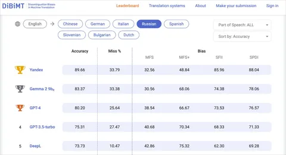

Яндекс запустил новую модель для документного перевода на основе YandexGPT. Она уже работает в Поиске, Умной камере и Нейропереводчике Яндекс Браузера, а также заняла первое место в бенчмарке DiBiMT по переводу с английского на русский. Обо всех нюансах работы переводчика и о том, как его создавали, на Хабре рассказал руководитель группы базового качества перевода Николай Карпачёв. А здесь — кратко о главном.
Документный перевод предполагает адаптацию на другой язык не каждого отдельного предложения, а всего текста. Почему это важно? Причин несколько. Например, английское «you» может означать как «ты», так и «вы», но без контекста модель не понимает, какой вариант выбрать. Термины и стилистика могут «прыгать» внутри текста, а пропущенные элементы, понятные носителю языка, в переводе превращаются в бессмысленный набор слов. Люди воспринимают текст иначе: мы читаем книги, статьи, субтитры — всё целиком. Значит, и машинный перевод должен работать так же.
Инженеры Яндекса попробовали перевести тексты LLM-моделью «из коробки», без дообучения, но столкнулись с типичными ошибками: пропущенные фрагменты, лишние добавления, галлюцинации. Чтобы этого избежать, модель пришлось адаптировать. На первом этапе подготовили данные, включая не только классические парные предложения, но и переводы документов, полученные автоматическим выравниванием и с помощью синтетики. Дообучение проходило в форматах LoRA и P-Tuning.
На следующем этапе модель дообучалась с помощью технологии alignment. Разные варианты переводов сравнивались редакторами-профессионалами. Полученные оценки использовали для оптимизации методом Contrastive Preference Optimization (CPO). На этой стадии происходит исправление существующих ошибок и проблем LLM-модели, найденных редакторами. Это позволило минимизировать ошибки, связанные с потерей информации и несогласованностью.
В итоге по метрике MQM новая модель переводит тексты почти так же хорошо, как человек. Количество грубых ошибок сократилось в два раза по сравнению с предыдущей версией, а финальный результат оказался даже лучше GPT-4o.
ML Underhood
